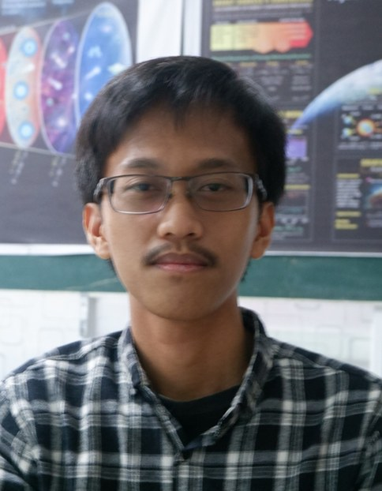

Astronomy & Astrophysics
MSc student · Institute of Astronomy, KU Leuven
Modelling the winds and dusty, molecule-rich envelopes of evolved stars, and connecting those models to what telescopes actually see.
Leuven, Belgium